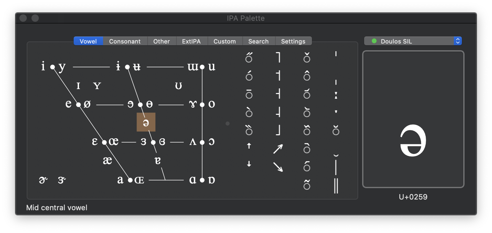

IPA Palette v2.3.1
/ʔa͜ɪ.pʰi'ɛ͜ɪ.pʰə'lɛt/
IPA Input Method for Mac OS X 10.6 and later
Open Source: MIT License

Version 2.3 Features and Fixes
- Notarized by Apple for distribution as an "identified developer" account.
- IPA font coverage indicated in font menu.
- Dark Mode compatible — tested primarily on macOS 10.15 Catalina.
- Working Sparkle auto-update capability.
Download
Download IPA Palette 2.3.1 (2.2M).
Reading the Documentation is highly recommended.
Source code can be found on GitHub.
Previous version compatible with Mac OS X 10.5 and earlier (but with auto-update broken):
Download the previous IPA Palette 2.2.1 (3.2M).
For Mac OS X 10.2-10.4:
Download the previous IPA Palette 2.0 (1.3M).
Download the previous IPA Palette 1.0 (629K).
What Folks Are Saying
- IPA Palette does exactly what a linguist would want, exactly the way a linguist would want it.
It's a beautiful piece of work.
— M.D.
- I have a great appreciation for the computer programmers that see a need and go all the way to meet it.
— A.W.
- How the heck did you finally come up with an IPA system that actually WORKS? You're a genius! Thank you!
— K.S.
- DUDE! You rock. Thanks so much for putting that together. It is MIRACULOUS!
— C.J.
- ...lovely little unit it is too, takes a lot of the blood sweat & tears
out of the task of transcription.
— C.H.
- I'm taking my first linguistics course and hit a serious note-taking roadblock when we started to use IPA.
I take my notes on my Mac laptop and just couldn't keep up the insert->character->etc routine fast enough to catch what
my prof. was talking about. Enter IPA Palette.
— L.G.
- I want to thank you very much for that software I was waiting for for
quite a long time.
— B.S.
- just a word of thanks for a very nice ipa input device....
your palette has a made an odious task much more manageable.
— S.W.
- Hey, THANK YOU so much for creating this incredibly useful tool.
— D.M.
- Thanks again for the great tool. It is very helpful.
— T.R.